Port-Based Clock Mapping Approach
The 1-to-1 clock mapping helps to achieve tight correlation between context analysis and flat analysis. But there can be cases where multiple block-level clocks need to be mapped to single top level clock or vice-versa. Tempus supports port-based clock mapping approach to handle such cases.
The port-based clock mapping approach is enabled by setting the timing_context_port_based_clock_mapping global variable to true. In port-based clock mapping, clock mapping is done for each clock and data port independently based on clock property matching. This section covers details of port-based clock mapping approach.
Multiple Top Clock to Single Block Clock Mapping
In case of multiple top clocks reaching a block port with one block clock defined in block constraints, Tempus automatically maps one block clock to multiple top clocks on a block port if the clock property matches. In case of clock property mismatch, manual clock mapping needs to be specified by the user.
Port Based Clock Mapping Example
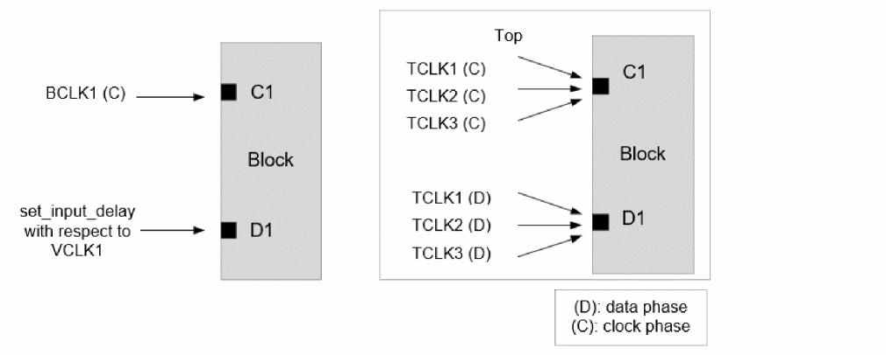
In above example, automatic clock mapping of TCLK1,TCLK2, or TCLK3 to BCLK1 on clock port C1 and to VCLK1 on data port D1 will be done if clock property matches.
The table shown below gives the resultant mapping when clock property matches:
| Port | Block Clock | Mapped Top Clock |
|---|---|---|
* (C) refers to clock phase and (D) refers to data phase
In this case, the worst-case latency of TCLK1/TCLK2/TCLK3 will be applied to BCLK1 at port C1 and worst-case arrivals of TCLK1/TCLK2/TCLK3 will be applied to VCLK1 at port D1 in context analysis. In top level analysis, separate paths will be reported with respect to TCLK1 / TCLK2 / TCLK3 clocks, while context analysis will report paths only with respect to BCLK1 / VCLK1. The worst casing of clock latency and arrivals can cause pessimism due to wider timing windows during context analysis. Also, any mismatch in constraints between TCLK1/TCLK2/TCLK3 and BCLK1/VCLK1 can cause mis-correlation.
Given below are few other examples:
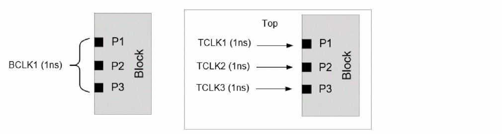
| Block Port | Block Clock | Mapped Top Clock |
|---|---|---|
In above example, the port specific clock latency is applied to BCLK1 in context analysis at ports P1, P2, and P3, and there will be no worst casing of clock-latency.
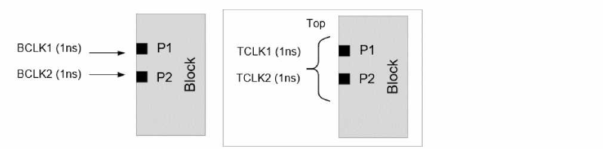
| Block Port | Block Clock | Mapped Top Clock |
|---|---|---|
In the above example, the port specific worst-cased top level clock latency is applied to BCLK1 and BCLK2 in context analysis at ports P1 and P2, respectively.
Multiple Block Clock to Single Top Clock Mapping
In case of one top clock reaching multiple block ports, with a different block clock defined on each of these block ports in block constraints, Tempus automatically maps different block clock to the same top clock on different block ports if the clock property matches. The top level data phases will be mapped (independent of clock phase mapping) to the block clock that constrains the data port. In case of clock property mismatch, manual clock mapping needs to be specified by the user.
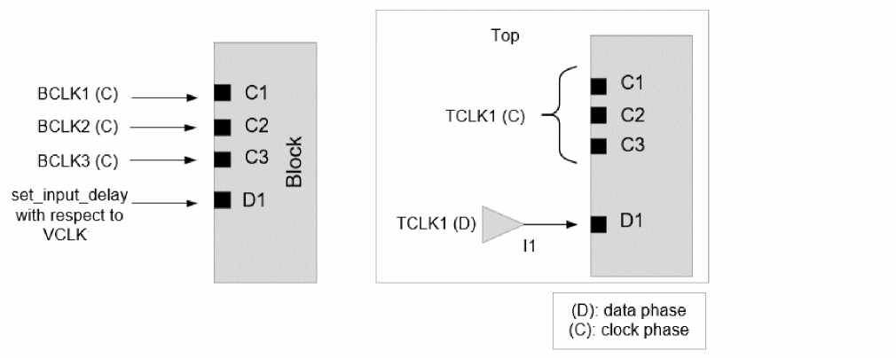
In above example, automatic clock mapping will be done if period/waveform of TCLK1 and BCLK1/BCLK2/BCLK3/VCLK match. The table below gives the resultant mapping:
| Block Port | Block Clock | Mapped Top Clock |
|---|---|---|
* (C) refers to clock phase and (D) refers to data phase
The port specific top level clock TCLK1 latency will be applied in context analysis for BCLK1/BCLK2/BCLK3 clocks.
In the above example, any path exception -to TCLK1 on input buffer I1 connected to D1 port in top level STA will be applied to BCLK1/BCLK2/BCLK3 clocks (for paths originating from port D1 only) in context analysis.
If there are multiple block clocks that can be mapped to the same top clock on the same block port, then the software will not perform auto mapping.
Consider the following examples:
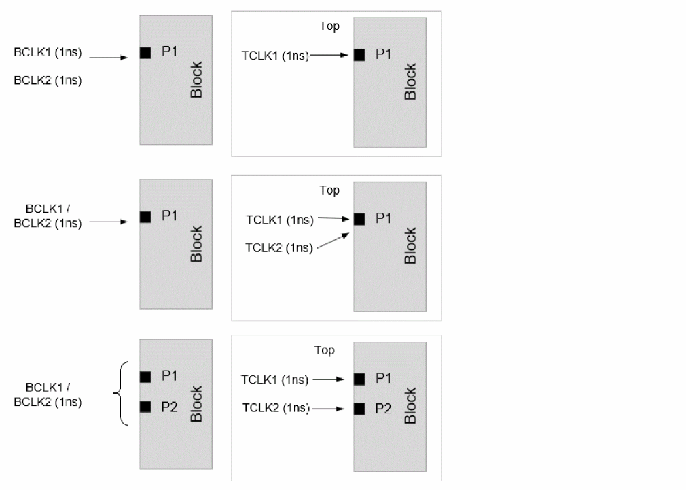
In the above examples, all the clocks will remain unmapped and will require manual clock mapping specification.
Example 1: Clock Phase Mapping
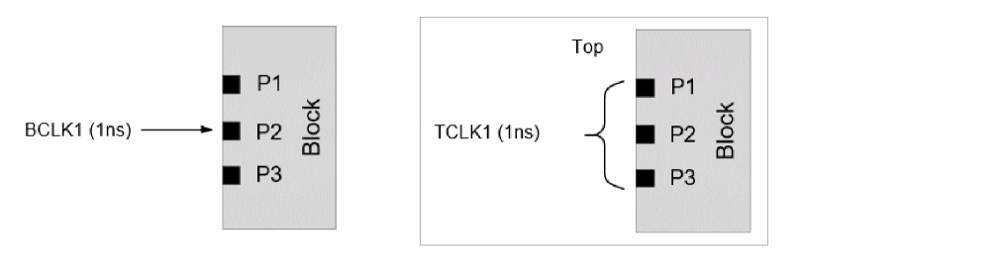
Expected clock mapping behavior:
- TCLK1 will be mapped to BCLK1 at port P2
- TCLK1 will be unmapped at port P1 and P3.
-
Clock would propagate only through P2. No clock propagation on P1 and P3
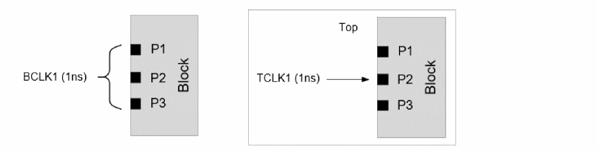
Expected clock mapping behavior:
- TCLK1 will be mapped to BCLK1 at port P2
- BCLK1 will be unmapped at port P1 and P3.
-
Clock would propagate only through P2. No clock propagation on P1 and P3
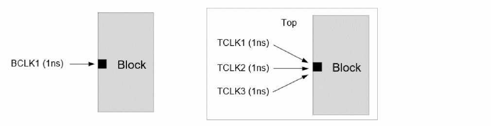
Expected clock mapping behavior:
- TCLK1 will be mapped to BCLK1 only
-
User needs to specify manual N-1 clock mapping when property does not match
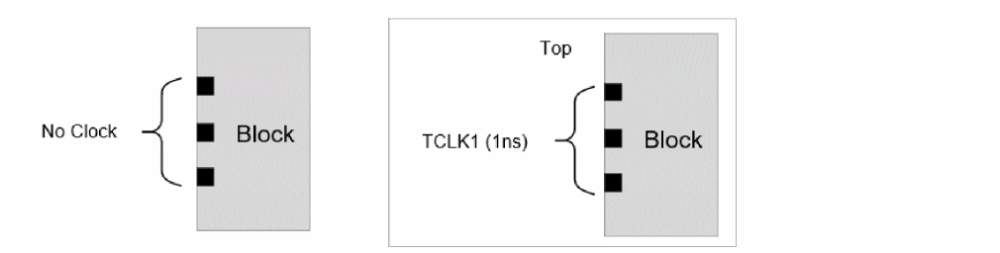
Expected clock mapping behavior:
Expected clock mapping behavior:
Expected clock mapping behavior:
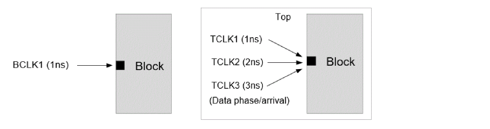
Expected clock mapping behavior:
Expected clock mapping behavior:
Expected clock mapping behavior:
- TCLK1(D) mapped to VCLK1 only at port P1
-
TCLK1(D) unmapped at ports P2 (and no arrival propagation from this port
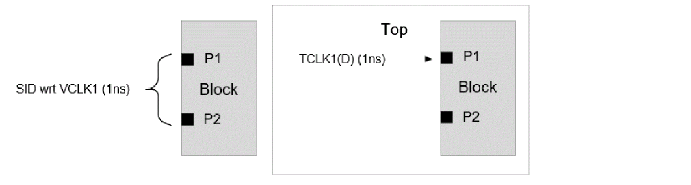
Expected clock mapping behavior:
- TCLK1(D) mapped to VCLK1 only at port P1
- VCLK1 will be unmapped at port P2 (and no arrival propagation from this port)
Return to top